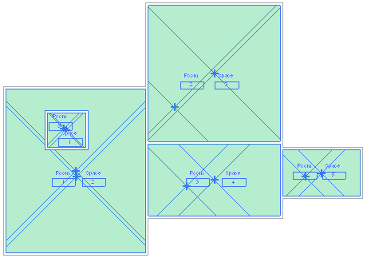
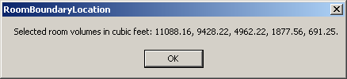

Room Boundary Location
We already had a look at enabling the room volume computation in C#. Here is a closely related question that also prompted me to implement something similar in VB for a change.
Question: Could you please provide some VB.NET code showing how to set the Autodesk.Revit.Rooms.BoundaryLocationType in the document, for instance to 'WallCenter'?
Answer: The boundary location type is applied when calculating the room volume. These settings are defined by the document settings volume calculation options. The post mentioned above discusses how to access and modify these settings.
I implemented a VB.NET sample application RoomBoundaryLocation for you to demonstrate this in VB as well. Here is the mainline code of its Execute method:
Public Function Execute( _ ByVal commandData As ExternalCommandData, _ ByRef message As String, _ ByVal elements As ElementSet) _ As CmdResult _ Implements IExternalCommand.Execute Dim app As Application = commandData.Application Dim doc As Document = app.ActiveDocument Dim opt As VolumeCalculationOptions _ = doc.Settings.VolumeCalculationSetting _ .VolumeCalculationOptions opt.VolumeComputationEnable = True opt.RoomAreaBoundaryLocation _ = Rooms.BoundaryLocationType.WallCenter doc.Settings.VolumeCalculationSetting _ .VolumeCalculationOptions = opt Dim volumes As List(Of String) = New List(Of String) Dim els As ElementSet = doc.Selection.Elements Dim e As Autodesk.Revit.Element For Each e In els If TypeOf e Is Room Then Dim room As Room = CType(e, Room) volumes.Add(room.Volume.ToString("0.##")) 'Else ' volumes.Add("Not a room") End If Next If 0 = volumes.Count Then message = "Please select some rooms." Else Dim s As String = _ +"Selected room volumes in cubic feet: " _ + String.Join(", ", volumes.ToArray()) _ + "." MsgBox(s) End If Return CmdResult.Failed End Function
Here are some sample rooms and spaces selected in the Revit user interface:

This is the resulting dialogue displayed by running the command:

Here is the complete Visual Studio solution RoomBoundaryLocation implementing the new command.